ALOOO Keeper League
Franchise History
Sultans of Dallas
| Year | Team Name | Manager | Playoff Rk | Season Rk | Roto Rk | Awards | |
| 2009 | Sultans of Durham | Ben R. | 1 | 6 | 5 | Commissioner's Trophy, Cy Young, Silver Slugger (1) | |
| 2010 | Sultans of Durham | Ben R. | 2 | 3 | 4 | Cy Young, Silver Slugger (1) | |
| 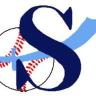 | 2011 | Sultans of Durham | Ben R. | 5 | 4 | 2 | |
| 2012 | Sultans of Durham | Ben R. | 8 | 7 | 6 | Cy Young, Silver Slugger (2) | |
| 2013 | Sultans of Durham | Ben R. | 1 | 1 | 1 | Commissioner's Trophy, Giles-Harridge Trophy, Roto Trophy, Cy Young | |
| 2014 | Sultans of Dallas | Ben R. | 2 | 2 | 2 | Delivery Man, Silver Slugger (1) | |
| 2015 | Sultans of Dallas | Ben R. | 2 | 2 | 3 | Silver Slugger (1) | |
| 2016 | Sultans of Dallas | Ben R. | 4 | 1 | 1 | Giles-Harridge Trophy, Roto Trophy, Silver Slugger (1) | |
| 2017 | Sultans of Dallas | Ben R. | 6 | 5 | 7 |
Lightning N Thunder
| Year | Team Name | Manager | Playoff Rk | Season Rk | Roto Rk | Awards | |
| 2009 | Lightning 'N Thunder | Greg R. | 9 | 9 | 7 | Relief Man, Gold Glove (2) | |
| 2010 | Lightning N Thunder | Greg R. | 7 | 7 | 7 | Relief Man, Silver Slugger (1), Gold Glove (1) | |
| 2011 | Lightning N Thunder | Greg R. | 3 | 2 | 3 | Great Lakes Division Champion, Silver Slugger (2) | |
| 2012 | Lightning N Thunder | Greg R. | 3 | 5 | 3 | Delivery Man | |
| 2013 | Lightning N Thunder | Greg R. | 3 | 4 | 3 | Relief Man (tie) | |
| 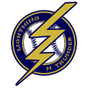 | 2014 | Lightning N Thunder | Greg R. | 6 | 4 | 5 | Silver Slugger (1) |
| 2015 | Lightning N Thunder | Greg R. | 8 | 9 | 7 | Relief Man | |
| 2016 | Lightning N Thunder | Greg R. | 1 | 4 | 3 | Commissioner's Trophy, Relief Man | |
| 2017 | Lightning N Thunder | Greg R. | 1 | 4 | 5 | Commissioner's Trophy |
South Bend Blue Sox
| Year | Team Name | Manager | Playoff Rk | Season Rk | Roto Rk | Awards | |
| 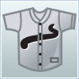 | 2009 | Pet It | Joe R. | 6 | 4 | 4 | MVP, Silver Slugger (2) |
 |
2010 | Pujols and Co. | Joe R. | 10 | 10 | 9 | Delivery Man, Silver Slugger (2), Gold Glove (1) |
|
2011 | Pujols and Co. | Joe R. | 6 | 6 | 9 | |
| 2012 | Verlander and Co. | Joe R. | 1 | 3 | 1 | Commissioner's Trophy, Roto Trophy, Silver Slugger (1) | |
| 2013 | Verlander and Co. | Joe R. | 6 | 5 | 5 | Rookie of the Year, Silver Slugger (2) | |
| 2014 | Life After Fernandez | Joe R. | 8 | 9 | 6 | Silver Slugger (1) | |
| 2015 | Life With Fernandez | Joe R. | 3 | 4 | 4 | Silver Slugger (1) | |
| 2016 | Life With Fernandez | Joe R. | 8 | 9 | 8 | ||
| 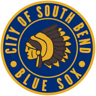 | 2017 | South Bend Blue Sox | Eddie M. | 2 | 6 | 4 | Delivery Man, Silver Slugger (2) |
Cuban Camels
| Year | Team Name | Manager | Playoff Rk | Season Rk | Roto Rk | Awards | |
| 2009 | BOYS OF SUMMER | Matt D. | 4 | 2 | 6 | ||
| 2010 | Dynasty | Kwang O. | 9 | 8 | 5 | ||
| 2011 | Dynasty | Kwang O. | 1 | 3 | 4 | Commissioner's Trophy, Rookie of the Year, Silver Slugger (1) | |
| 2012 | DL Dynasty | Kwang O. | 4 | 2 | 5 | Midwest Division Champion, Silver Slugger (1) | |
| 2013 | DL Dynasty | Kwang O. | 10 | 7 | 7 | Relief Man (tie), Silver Slugger (1) | |
| 2014 | Cuban Camels | Seth H. | 3 | 5 | 4 | Rookie of the Year, Silver Slugger (1) | |
| 2015 | Cuban Camels | Seth H. | 4 | 6 | 6 | Silver Slugger (1) | |
| 2016 | Cuban Camels | Seth H. | 3 | 6 | 6 | ||
| 2017 | Cuban Camels | Seth H. | 7 | 7 | 6 | MVP, Rookie of the Year, Cy Young, Silver Slugger (1) |
Isotopes
| Year | Team Name | Manager | Playoff Rk | Season Rk | Roto Rk | Awards | |
| 2009 | Isotopes | Mike R. | 8 | 10 | 10 | ||
| 2010 | Isotopes | Mike R. | 6 | 5 | 6 | Gold Glove (1) | |
| 2011 | Isotopes | Mike R. | 9 | 7 | 8 | Silver Slugger (1) | |
| 2012 | Isotopes | Mike R. | 6 | 4 | 3 | ||
| 2013 | Isotopes | Mike R. | 2 | 2 | 4 | Delivery Man | |
| 2014 | Isotopes | Mike R. | 4 | 3 | 1 | Roto Trophy, Silver Slugger (1) | |
| 2015 | Isotopes | Mike R. | 12 | 11 | 12 | ||
| 2016 | Isotopes | Mike R. | 9 | 8 | 9 | Cy Young, Silver Slugger (1) | |
| 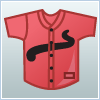 | 2017 | Isotopes | Mike R., Joe R. | 12 | 12 | 12 |
Mookies
| Year | Team Name | Manager | Playoff Rk | Season Rk | Roto Rk | Awards | |
| 2009 | Bad News Bears | Matt R. | 5 | 3 | 1 | Roto Trophy, Delivery Man | |
| 2010 | The M-Robz Nine | Matt R. | 1 | 4 | 2 | Commissioner's Trophy, Silver Slugger (1) | |
| 2011 | The M-Robz Nine | Matt R. | 2 | 1 | 1 | Giles-Harridge Trophy, East Coast + KC Division Champion, Roto Trophy, Cy Young, Silver Slugger (1) | |
| 2012 | The M-Robz Nine | Matt R. | 2 | 1 | 2 | Giles-Harridge Trophy, Coast Division Champion, MVP, Rookie of the Year, Silver Slugger (2) | |
| 2013 | Wumbly in My Tumbly | Matt R. | 4 | 3 | 2 | Silver Slugger (2) | |
| 2014 | Mookies | Matt R. | 1 | 1 | 3 | Commissioner's Trophy, Giles-Harridge Trophy | |
| 2015 | Mookies | Matt R. | 1 | 1 | 2 | Commissioner's Trophy, Giles-Harridge Trophy, Rookie of the Year | |
| 2016 | Mookies | Matt R. | 2 | 2 | 2 | Silver Slugger (3) | |
| 2017 | Mookies | Matt R. | 4 | 1 | 1 | Giles-Harridge Trophy, Roto Trophy, Silver Slugger (1) |
Three Finger's Ghost
| Year | Team Name | Manager | Playoff Rk | Season Rk | Roto Rk | Awards | |
| 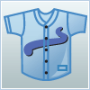 | 2009 | I Heart Audrey | Jon Y. | 7 | 8 | 11 | Silver Slugger (1) |
| 2010 | I Heart Heyward | Jon Y. | 4 | 1 | 3 | Giles-Harridge Trophy, MVP, Rookie of the Year, Silver Slugger (1) | |
| 2011 | I Heart Heyward | n/a | 7 | 9 | 7 | Silver Slugger (1) | |
| 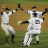 | 2012 | Sexy and I Cano It | John C. | 9 | 10 | 9 | Silver Slugger (1) |
| 2013 | Three Finger's Ghost | Ryan F. | 7 | 10 | 10 | ||
| 2014 | Three Finger's Ghost | Zach K. | 7 | 7 | 8 | MVP, Cy Young, Relief Man, Silver Slugger (1) | |
| 2015 | Three Finger's Ghost | Zach K. | 5 | 5 | 5 | Delivery Man, Silver Slugger (1) | |
| 2016 | Three Finger's Ghost | Zach K. | 7 | 7 | 5 | MVP, Silver Slugger (2) | |
| 2017 | Three Finger's Ghost | Zach K. | 10 | 11 | 9 | Silver Slugger (1) |
Jackie Treehorn
| Year | Team Name | Manager | Playoff Rk | Season Rk | Roto Rk | Awards | |
| 2009 | Shoryuken | Jon C. | 2 | 1 | 2 | Giles-Harridge Trophy, Silver Slugger (1) | |
 |
2010 | Hadouken | Jon C. | 3 | 2 | 1 | Roto Trophy, Silver Slugger (2) |
|
2011 | We So Excited | Clark S. | 8 | 10 | 10 | MVP, Silver Slugger (1) |
|
2012 | We So Excited | Clark S. | 7 | 8 | 6 | Relief Man, Silver Slugger (1) |
| 2013 | We So Excited | Laura S. | 9 | 8 | 8 | Silver Slugger (1) | |
| 2014 | Jackie Treehorn | John M. | 5 | 6 | 7 | Silver Slugger (1) | |
| 2015 | Jackie Treehorn | John M. | 9 | 7 | 9 | ||
| 2016 | Jackie Treehorn | Kevin J. | 12 | 11 | 11 | ||
| 2017 | Jackie Treehorn | Kevin J. | 11 | 10 | 11 | Relief Man |
Pissed Off Possums
| Year | Team Name | Manager | Playoff Rk | Season Rk | Roto Rk | Awards | |
| 2009 | Guppies | Rich W. | 11 | 11 | 9 | Silver Slugger (2), Gold Glove (1) | |
| 2010 | Why So Serious? | Steve M. | 8 | 9 | 10 | ||
| 2011 | Trial and Error | Brent S. | 4 | 5 | 6 | Relief Man, Delivery Man | |
| 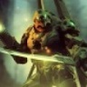 | 2012 | Corruption | Chris P. | 10 | 9 | 10 | |
| 2013 | Corruption | Chris P. | 8 | 9 | 9 | ||
| 2014 | Lost | Brad B. | 9 | 8 | 10 | ||
| 2015 | Bryce's Bold Team | Bryce P. | 10 | 8 | 8 | ||
| 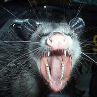 | 2016 | Pissed Off Possums | Chuck C. | 5 | 5 | 4 | Silver Slugger (1) |
| 2017 | Pissed Off Possums | Chuck C. | 9 | 9 | 10 | Silver Slugger (1) |
Washington McNasty
| Year | Team Name | Manager | Playoff Rk | Season Rk | Roto Rk | Awards | |
| 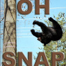 | 2009 | Team Goosuu | Tony L. | 3 | 5 | 3 | Rookie of the Year, Silver Slugger (1) |
| 2010 | Team Goosuu | Tony L. | 5 | 6 | 8 | ||
| 2011 | Team Goosuu | Tony L. | 10 | 8 | 5 | Silver Slugger (1) | |
| 2012 | Team PRC | Tony L. | 5 | 6 | 8 | ||
| 2013 | Washington McNasty | Nick M. | 5 | 6 | 6 | MVP, Silver Slugger (2) | |
| 2014 | Washington McNasty | Nick M. | 10 | 10 | 9 | Silver Slugger (1) | |
| 2015 | Washington McNasty | Nick M. | 11 | 12 | 11 | ||
| 2016 | Washington McNasty | Rob M. | 11 | 12 | 12 | Delivery Man | |
| 2017 | Washington McNasty | Rob M. | 5 | 3 | 3 |
Conquistadors
| Year | Team Name | Manager | Playoff Rk | Season Rk | Roto Rk | Awards | |
| 2015 | Conquistadors | Scott B. | 6 | 3 | 1 | Roto Trophy, MVP, Cy Young, Silver Slugger (2) | |
| 2016 | Conquistadors | Scott B. | 6 | 3 | 7 | Rookie of the Year | |
| 2017 | Conquistadors | Scott B. | 3 | 2 | 2 | Silver Slugger (1) |
BATtaillon
| Year | Team Name | Manager | Playoff Rk | Season Rk | Roto Rk | Awards | |
| 2015 | Lost | Will C. | 7 | 10 | 10 | Silver Slugger (2) | |
| 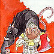 | 2016 | Dwarven Decimators | Rudy M. | 10 | 10 | 10 | |
| 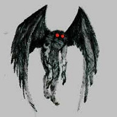 | 2017 | BATtaillon | Rudy M. | 8 | 8 | 8 | Silver Slugger (1) |
Huffmania
| Year | Team Name | Manager | Playoff Rk | Season Rk | Roto Rk | Awards | |
| 2009 | Huffmania | Eric H. | 10 | 7 | 8 |
Tribe
| Year | Team Name | Manager | Playoff Rk | Season Rk | Roto Rk | Awards | |
| 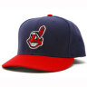 | 2009 | Tribe | Joel | 12 | 12 | 12 |